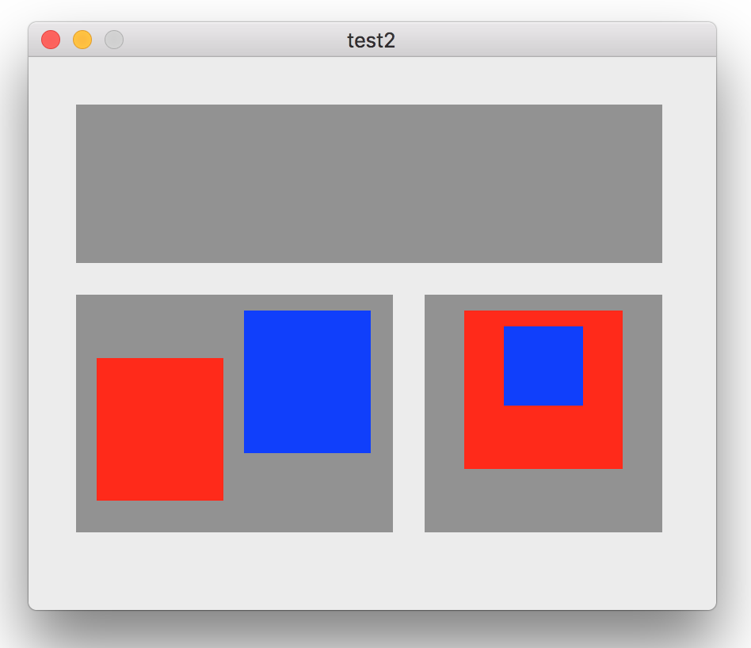

階層化したビューを再帰的に取得する
ビューを作成してウィンドウに追加する
ビューを再帰的に取得する・パターン１
ビュー格納用配列を関数の外側で確保し、参照渡しで関数に渡す方法
ビューを再帰的に取得する・パターン２
取得したビューの配列を関数戻り値にする方法
ビューを再帰的に取得する・パターン３
Swiftらしく簡潔に書くこともできる。
flatMapメソッドは実行結果の2次元配列を1次元配列に変換（フラット化？）している。mapメソッドで書き直せば次のようになり、何をしているかいくらか理解しやすいのでは。
実行結果：取得したビューのframe属性を出力
システムのデフォルトの座標系はY軸は下方向が原点となる。
内側のビューの原点は、そのビューの基となる一つ外側のビュー（super view）からみた位置となる。
座標系の変更
Y軸方向の原点を上方向に変更するにはNSViewクラスのサブクラスの中で次のプロパティをオーバーライドする。
本サンプルプログラムの全てのNSViewをこれに置き換えると結果は次のような上下逆転した像となる。
